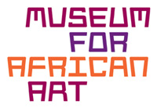

All public programming events are free and open to the public. Space is limited, RSVP required: 212-992-7818, rsvp_exhibitions@nyu.edu
Lecture Series
March 24, 2011, 6pm
Geoff Emberling, Guest Curator Nubia: Ancient Kingdoms of Africa
In the Margins: The Latest Salvage Excavations in Nubia at the 4th Cataract of the Nile
Archaeology in Nubia has largely been a series of salvage projects. Archaeologists have raced to gather as much knowledge as possible before completed dams flood large areas of the Nile Valley. This lecture, by exhibit curator Geoff Emberling, will focus on the most recent Nubian salvage project, that of the Merowe Dam, which flooded the entire 4th Cataract region in 2008. The 4th Cataract has always been a peripheral region, and this intensive international effort demonstrates how much we can learn by working in the margins of power. A particular focus on the expansion of the kingdom of Kush into this area (ca. 2000-1550 BC) recovered evidence for ancient gold mining and contacts with nomads of the Eastern desert, and reveals insights into the operation of this early African kingdom.
April 11, 2011, 4-6:30pm
Special Reception for Educators
RSVP strongly recommended.
Location: ISAW
In collaboration with the Museum for African Art, ISAW is hosting a special educators reception on the exhibition Nubia: Ancient Kingdoms of Africa. For more information please contact Irene Gelbord, 212.992.7818.
Downloads:
- School Guided Tour Request Form (pdf; 1.5MB)
- Educational Resource Packet (pdf; 9.7MB)
April 14, 2011, 6pm
Rita Freed, John F. Cogan and Mary L. Cornille Chair of Art of the Ancient World, Boston Museum of Fine Arts
Discovering Empires: George Reisner in Nubia
With the heightening of the first Aswan dam in the first decade of the Twentieth Century, Egyptian authorities asked George Reisner, a talented young archaeologist working in Egypt on behalf of the Museum of Fine Arts, Boston, to survey a stretch of land below the First Cataract of the Nile prior to its being flooded. Excavating 1200 graves of a strange and new culture in one season, Reisner quickly recognized the potential of the geographical area encompassing southern Egypt and northern Sudan (Nubia). Returning repeatedly over the next two decades (1913-1932), Reisner excavated tombs, temples, forts, and towns spanning nearly 4000 years and discovered the artistic masterpieces now on view at ISAW. This lecture will focus on the behind-the-scenes story of those excavations.
May 11, 2011, 6pm
Charles Bonnet, Member of the Institute of France, Director of the excavations at Dukki Gel (Kerma)